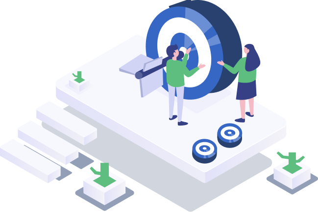

<div class="container-fluid">
    <div class="container">
        <div class="row">
            <div class="col-md-4">
                <div class="accordion accordion-flush" id="accordionFlushExample">
                    <div class="accordion-item"> <!-- first accordion -->
                        <h2 class="accordion-header" id="flush-headingOne">
                            <button class="accordion-button collapsed" type="button" data-bs-toggle="collapse"
                                data-bs-target="#flush-collapseOne" aria-expanded="false" aria-controls="flush-collapseOne">
                                The Rules We Work
                            </button>
                        </h2>
                        <div id="flush-collapseOne" class="accordion-collapse collapse" aria-labelledby="flush-headingOne"
                            data-bs-parent="#accordionFlushExample">
                            <div class="accordion-body">-Establish a code of conduct or company
                                culture that promotes respect, collaboration, and inclusivity <br>-Make sure that the
                                software being developed meets
                                high quality standards. This can include regular code reviews, testing, and bug fixes<br>-Ensure that security
                                measures are in place to protect user data and prevent data breaches.<br>-Clear communication between team members, client and stakeholders
                                
                            </div>
                        </div>
                    </div>
    
                    <div class="accordion-item"> <!-- 2nd accordion -->
                        <h2 class="accordion-header" id="flush-headingTwo">
                            <button class="accordion-button collapsed" type="button" data-bs-toggle="collapse"
                                data-bs-target="#flush-collapseTwo" aria-expanded="false" aria-controls="flush-collapseTwo">
                                Getting Easier Solutions
                            </button>
                        </h2>
                        <div id="flush-collapseTwo" class="accordion-collapse collapse" aria-labelledby="flush-headingTwo"
                            data-bs-parent="#accordionFlushExample">
                            <div class="accordion-body">-Collaborative team effort <br>-Research and leverage existing
                                solutions <br> -When facing a complex problem, try
                                breaking it down into smaller, more manageable pieces.<br>-Agile development practices
                                can you in quickly identifying and addressing issues, allows you to improve solutions.
                            </div>
                        </div>
                    </div>
    
                    <div class="accordion-item"> <!-- 3rd accordion -->
                        <h2 class="accordion-header" id="flush-headingThree">
                            <button class="accordion-button collapsed" type="button" data-bs-toggle="collapse"
                                data-bs-target="#flush-collapseThree" aria-expanded="false"
                                aria-controls="flush-collapseThree">
                                Working With Passion
                            </button>
                        </h2>
                        <div id="flush-collapseThree" class="accordion-collapse collapse"
                            aria-labelledby="flush-headingThree" data-bs-parent="#accordionFlushExample">
                            <div class="accordion-body">-We offer flexible work arrangements, such as remote work or
                                flexible schedules, to help employees balance their work
                                and personal lives. <br> - We offer opportunities for training, development, and career growth.
                                <br> -We recognize and reward
                                employees for their achievements and contributions. <br> -We encourage collaboration and
                                teamwork among employees. <br> -We celebrate successes, be it big or small.
                            </div>
                        </div>
    
                        <div class="accordion-item"> <!-- 4th accordion -->
                            <h2 class="accordion-header" id="flush-headingfour">
                                <button class="accordion-button collapsed" type="button" data-bs-toggle="collapse"
                                    data-bs-target="#flush-collapsefour" aria-expanded="false"
                                    aria-controls="flush-collapsefour">
                                    Preparing The Idea
                                </button>
                            </h2>
                            <div id="flush-collapsefour" class="accordion-collapse collapse"
                                aria-labelledby="flush-headingfour" data-bs-parent="#accordionFlushExample">
                                <div class="accordion-body">-Conduct research. <br> -Analyze customer needs. <br> -
                                    Encourage employees to share their ideas and collaborate on new
                                    solutions. <br> -Monitor competitor's activities and analyze their products and services.
                                    <br> -Foster a culture of innovation by encouraging experimentation, risk-taking, and
                                    continuous learning.
                                </div>
                            </div>
                        </div>
                    </div>
                </div>
            </div>
            <!-- image section -->
            <div class="col-md-6 mt-2">
                
            </div>
    
        </div>
</div>
